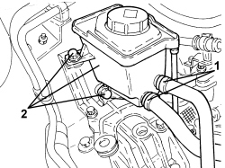
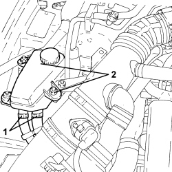
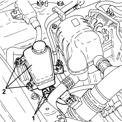
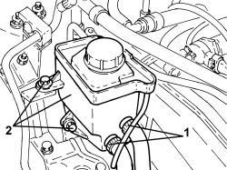

4130B10 POWER STEERING FLUID RESEVOIR - R.R.
- Path
- Procedures > 41 STEERING UNIT > 4130 POWER STEERING > 4130B POWER STEERING HYDRAULIC SYTEM > 4130B10 POWER STEERING FLUID RESEVOIR - R.R.
- Kind
- repair procedure (removal / refitting; the operation number is the code)
- Applies to
- engines: 1.9 JTS, 2.2 JTS, 3.2 JTS, 1.9 JTD 8V, 1.9 JTD 16V, 2.4 JTD 20V; all production periods
- Interactive page
- https://sloeber94.github.io/elrnDB/alfa/159/en/#/939010833
Applies to: engines: 1.9 JTS, 2.2 JTS; all production periods
 Removing
Removing
 Refitting
Refitting- Draw off the power assisted steering fluid using a suitable syringe.
1. Loosen the bands and remove the two pipes from the reservoir.
2. Undo the bolts and remove the reservoir from the bracket.

Applies to: engines: 1.9 JTS, 2.2 JTS; all production periods
Refitting
Removing- Fit the reservoir in its housing and secure it using the bolts.
- Place the two pipes in their housings and secure them using the bands.
Op. 0010T71 POWER STEERING FLUID CHECK LEVEL AND TOP UP IF NECESSARY
Applies to: engines: 3.2 JTS; all production periods
Removing
Refitting- Draw off the power assisted steering fluid from the reservoir using a suitable syringe.
1. Loosen the bands and disconnect the two pipes from the power assisted steering fluid reservoir.
2. Undo the fixing nuts and remove the power assisted steering fluid reservoir.

Applies to: engines: 3.2 JTS; all production periods
Refitting
Removing- Place the power assisted steering fluid reservoir back in its housing and secure it using the nuts.
- Connect the two pipes to the power assisted steering fluid reservoir and tighten the bands.
Op. 0010T71 POWER STEERING FLUID CHECK LEVEL AND TOP UP IF NECESSARY
Applies to: engines: 1.9 JTD 8V, 1.9 JTD 16V; all production periods
Removing
Refitting- Draw off the power assisted steering fluid using a suitable syringe.
1. Loosen the bands and remove the two pipes from the reservoir.
2. Undo the nuts and remove the reservoir from the bracket.

Applies to: engines: 1.9 JTD 8V, 1.9 JTD 16V; all production periods
Refitting
Removing- Fit the reservoir in position and tighten the nuts.
- Place the two pipes in their housings and secure them using the bands.
Op. 0010T71 POWER STEERING FLUID CHECK LEVEL AND TOP UP IF NECESSARY
Applies to: engines: 2.4 JTD 20V; all production periods
Removing
Refitting- Draw off the power assisted steering fluid using a suitable syringe.
1. Loosen the bands and remove the two pipes from the reservoir.
2. Undo the bolts and remove the reservoir from the bracket.

Applies to: engines: 2.4 JTD 20V; all production periods
Refitting
Removing- Fit the reservoir in its housing and secure it using the bolts.
- Place the two pipes in their housings and secure them using the bands.
Op. 0010T71 POWER STEERING FLUID CHECK LEVEL AND TOP UP IF NECESSARY
Topics linked from this page (2)
- 0010T71 POWER STEERING FLUID CHECK LEVEL AND TOP UP IF NECESSARY
- 0010T75 HYDRAULIC POWER STEERING SYSTEM BLEED AIR